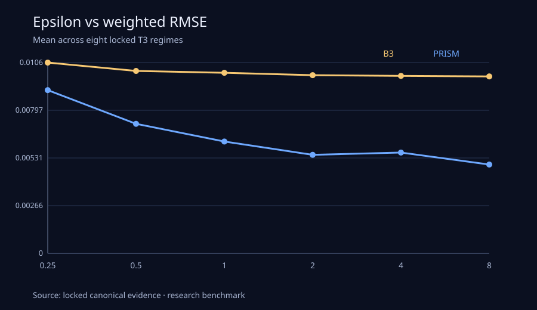
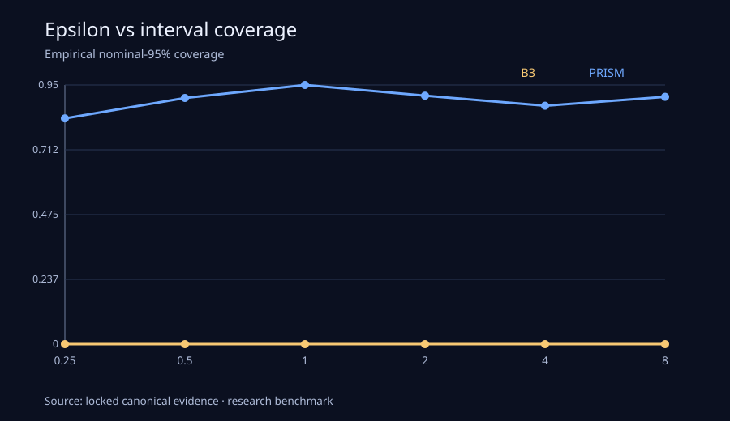
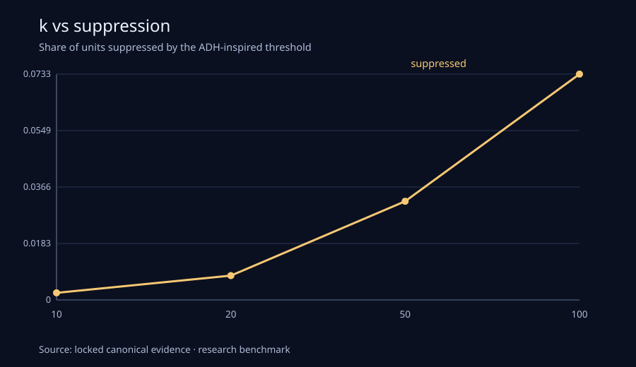
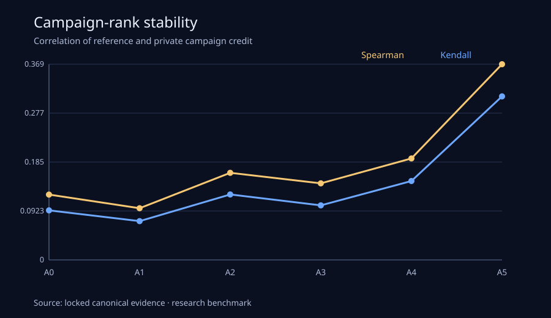
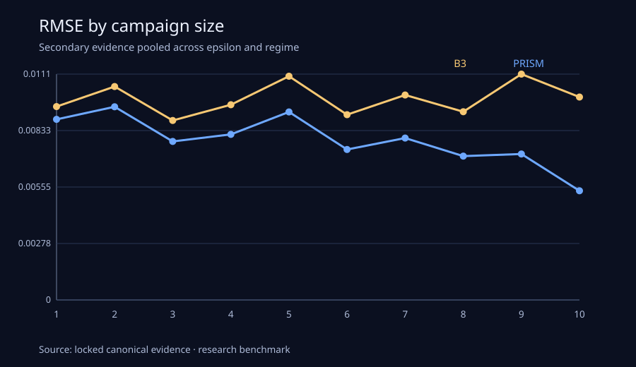

Point accuracy
RMSE ↓ 7.87%
0.004698 → 0.004328
B3 → PRISM
Primary locked weighted campaign-segment RMSE.
Privacy-Preserving Advertising Measurement
A governed research benchmark for causal incrementality, privacy, attribution, and advertising decision quality.
Active freeze: prism-ads-v2.2-20260904-8d98593fabdf-r2
Locked decision
RETAIN_BASELINE
PRISM improved point accuracy and downstream allocation decisions, but failed the preregistered uncertainty-calibration gate and was therefore not promoted.
Uncertainty caveat: Neither model's current interval estimates are endorsed for high-stakes uncertainty decisions. B3 nominal-95% coverage was 0.19%; PRISM reached 70.6%, but the frozen PRISM minimum was 80%.
Primary performance
Point accuracy
RMSE ↓ 7.87%
0.004698 → 0.004328
B3 → PRISM
Primary locked weighted campaign-segment RMSE.
Decision quality
Top-10% regret
1.89% → 0.71%
Top-25%: 1.05% → 0.65%
Locked T3 known-truth allocation simulation.
Uncertainty calibration
70.6% empirical coverage
Target: ≥80%
FAIL — blocks promotion
Nominal 95% PRISM intervals.
Long-tail point accuracy
Bottom-decile RMSE ↓ 10.74%
0.005359 → 0.004783
Locked scorecard
| Metric | B3 | PRISM | PRISM change | Promotion gate |
|---|---|---|---|---|
| Weighted RMSE | 0.004698 | 0.004328 | −7.87% | PASS |
| Macro RMSE | 0.005285 | 0.004978 | −5.82% | PASS |
| Bottom-decile weighted RMSE | 0.005359 | 0.004783 | −10.74% | PASS |
| Top-10% normalized regret | 1.89% | 0.71% | −1.18 pp | PASS |
| Top-25% normalized regret | 1.05% | 0.65% | −0.40 pp | PASS |
| Nominal 95% interval coverage | 0.19% | 70.6% | +70.4 pp | FAIL: PRISM < 80% |
Research synthesis
PRISM reduced locked weighted RMSE by 7.87%.
Nominal-95% PRISM intervals covered truth 70.6% of the time.
Top-10% normalized regret fell from 1.89% to 0.71% in the locked T3 decision simulation.
Suppression disproportionately affected small groups. This is availability and measurement-coverage loss, not universal point-error degradation.
At epsilon=1, private attribution rank stability was weak. Descriptive attribution should not be the sole budget-allocation signal.
Privacy / attribution / long-tail evidence
Where did explicit privacy modeling improve point error?

Takeaway: PRISM improvements were more common in heterogeneous-effect settings and were not uniform across all epsilon/regime cells.
View the full figure index and derivation notesDid better point estimation yield calibrated intervals?

Takeaway: Point-estimation gains did not solve interval calibration; uncertainty remained the binding release constraint.
View the full figure index and derivation notesHow did higher release thresholds change measurement availability?

Takeaway: Increasing k from 10 to 100 reduced released groups from 3,055 to 1,498 while released unit share fell from 99.77% to 92.67%, showing disproportionate small-group suppression.
View the full figure index and derivation notesWere private campaign-credit rankings stable enough for allocation?

Takeaway: At epsilon=1, A0–A4 private attribution Spearman correlations were roughly 0.10–0.19, indicating unstable campaign-credit rankings.
View the full figure index and derivation notesDid small-group suppression risk erase the locked point-error gain?

Takeaway: Despite greater suppression risk for small groups, PRISM improved the locked bottom-decile point-error endpoint by 10.74%.
View the full figure index and derivation notesBusiness implication: In this benchmark, privacy-safe causal estimates remained useful for simulated campaign prioritization even when descriptive attribution rankings became unstable, but uncertainty calibration must pass independently before a new measurement model is adopted.
Recommendation
Methods / scope
Public randomized Criteo uplift benchmark.
User/campaign multi-touch structures and differential-privacy stress testing.
Real structural backbone plus randomized semi-synthetic outcomes with sealed truth.
{kind=link}
{kind=link}
{kind=link}
{kind=link}
{kind=link}